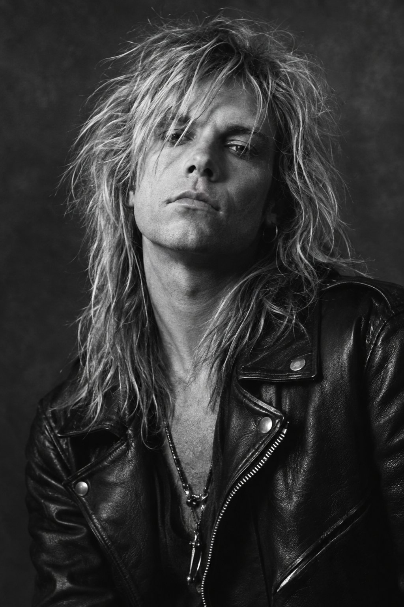
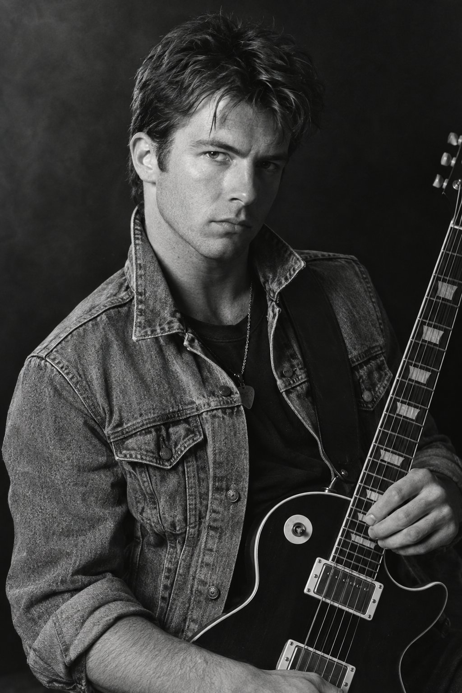
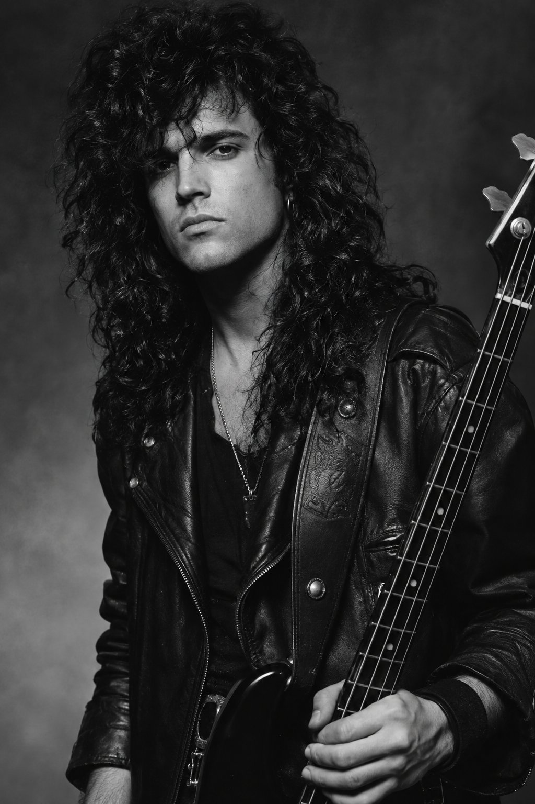
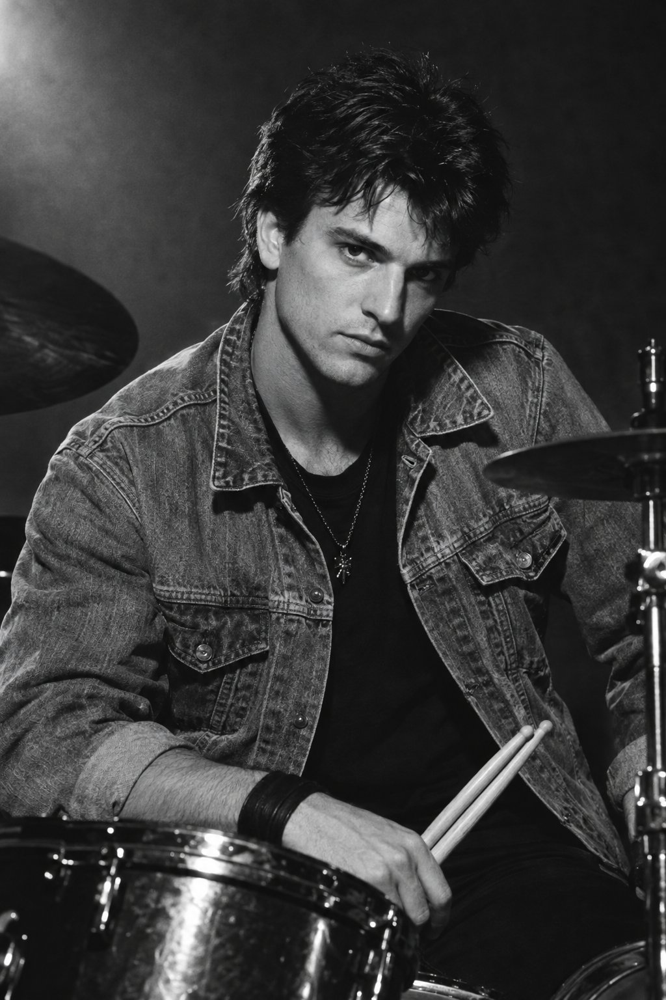

Erik Lindqvist
Sång & rytmgitarrBandets grundare och karismatiska frontfigur. Erik skriver de flesta av Stars of Heavens texter och är känd för sin kraftfulla röst på scen.
Fyra musiker som tillsammans skapar Stars of Heavens unika sound.

Bandets grundare och karismatiska frontfigur. Erik skriver de flesta av Stars of Heavens texter och är känd för sin kraftfulla röst på scen.

Mikael är bandets riff-mästare och står bakom de minnesvärda gitarrsolona som präglar nästan varje låt i katalogen.

Johan håller ihop bandets groove med sitt tunga baskomp och är även bandets huvudsakliga låtskrivare tillsammans med Erik.

Anders energiska trumspel är hjärtat i bandets liveframträdanden och ger låtarna deras explosiva kraft.